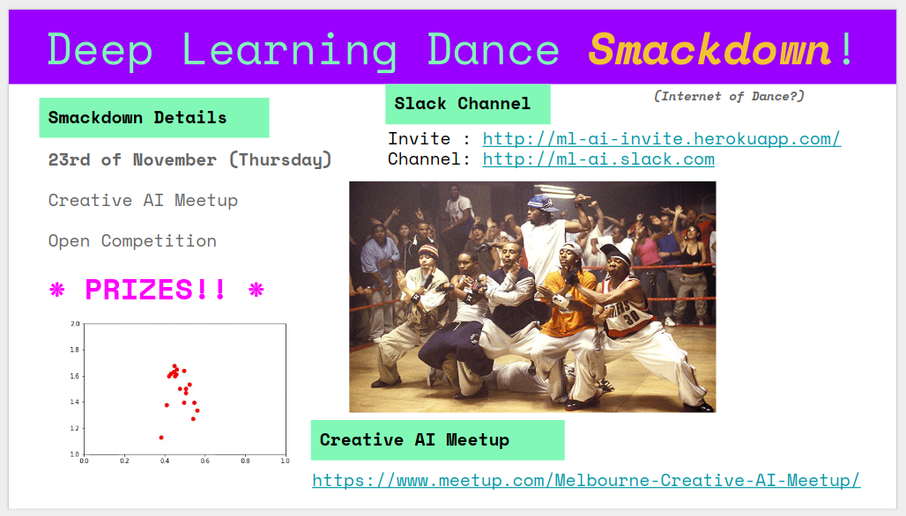

Deep Learning Dance Smackdown!
For the final event of the Melbourne Creative AI meetup this year I thought we’d run a small, fun, competition - a deep learning dance smackdown.

The event details are on Meetup.
Idea
The basic idea is, build a program that (does something like):
- Watches a dance,
- and then, Responds with a dance.
The exact format is flexible; some options would be:
- Watch a video, learn the poses, respond with a dance,
- Listen to audio, learn how to dance to the beat,
- Watch a bunch of dances in joint/pose format, and then respond with dances in this same format,
- Something else!
You may like to use:
- GANs (See this great list for a recent collection of GANs),
- Sequence models (tensor2tensor, seq2seq, …)
- Ready-made model (human-motion-prediction, …)
- Something crazy!
The format on the night will simply be to show how your particular idea works. It could be interactive, it could be online, it could be a presentation, it could be embodied in an robot! I leave it to your imagination.
Prize!
The prize on the night will be one of the Evolution of Dance T-Shirts:

Pre-existing and related work
- Nonlinear dance motion analysis and motion editing using Hilbert-Huang transform
- Creative Robot Dance with Variational Encoder
- Dance Dance Convolution
- Exploring Implicit Human Responses to Robot Mistakes in a Learning from Demonstration Task
- Generative Choreography using Deep Learning
- Movement Coordination in Human-Robot Teams: A Dynamical Systems Approach
- Free-body Gesture Tracking and Augmented Reality Improvisation for Floor and Aerial Dance
- The Control Theory of Motion-Based Communication: Problems in Teaching Robots to Dance
- Let Us Dance Just a Little Bit More — On the Information Capacity of the Human Motor System
- Semantic Modeling and Retrieval of Dance Video Annotations
- Modeling and Annotating the Expressive Semantics of Dance Videos
- Tutoring System for Dance Learning
How to join … !
If you want to participate, then just send me an email, or just come along on the night with something to show!
Keep in mind …
The Three Laws of Robotic Dancing (courtesy of andyg)
- A dance robot may not out-dance a human being or, through dance, allow a human being to be embarrassed.
- A dance robot must complement the movements given it by human beings except where such dance moves would conflict with the First Law or good taste.
- A dance robot must protect its own existence as long as such protection does not conflict with the First or Second Laws and the conservation of angular momentum.